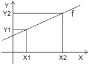

对象模拟输入 (AI)
对象类型模拟输入 (AI) 包括一个模拟输入的 BACnet 属性。
“名称”、“描述”和“命名扩展”之间存在依赖关系。对其中一项属性的任何更改都会影响其他两项属性。
笔记：
通过输入项目特定的文本可以消除依赖性。
示例1：
如果选择，预配置的“描述”“送风湿度”会将“名称”设置为“HuSu”。如果选择“Abs”作为“命名扩展”的补充，则说明将由“(Absolut)”补充为“送风湿度（绝对）”，名称变为“HuSu(Abs)”。该名称还构成对象名称的最后一个元素。
示例2：
如果选择，预配置的“描述”“室温”会将“名称”设置为“TR”。除了“命名扩展”之外，选择“01”（项目特定文本）会生成“名称”“TR(01)”。该名称还构成对象名称的最后一个元素。
Name |
|
|
|---|---|---|
'Name' 是特定于实例的名称。它用于设置层次对象名称。 | ||
财产ID：4438 | ||
Description |
|
|
|---|---|---|
'Description' 描述了一个 BACnet 对象。 “描述”是一个可翻译的字符串，在内部保存为文本引用或直接保存为字符串。 | ||
财产ID：28 | ||
Name extension |
|
|
|---|---|---|
'Name extension' 是名称的可选扩展名。它唯一地标识一个对象或区分对象。 | ||
财产ID：4437 | ||
Note
文本目录中的名称也可用于“命名扩展”。
警报是根据 BACnet 对象内的内部报告原则实现的。
选择“属性”选项卡添加扩展，在“启用事件”字段中选择“是”。设置所需的 BACnet 属性显示在 ABT 站点和编程编辑器的“属性”选项卡下。
Alarming
Overview

①‘监控时间偏差’
②‘监测时间偏离正常’
③“滞后至正常”
启用事件 |
|
|
|---|---|---|
“启用事件”启用警报功能。显示设置函数所需的 BACnet 属性。 要设置“是”，请将“具有事件配置的扩展”设置设置为“固有事件注册”。 | ||
财产ID：35 | ||
Limit enable |
|
|
|---|---|---|
'Limit enable' 确定触发警报所考虑的限制。 | ||
财产ID：52 | ||
您可以通过复选框选择任一限制，但只能选择一个：
清除所有复选框：无效
'下限启用'：考虑设置'下限'。当超出限制并发送消息“To-OffNormal”时，将触发事件。
“上限启用”：考虑设置“上限”。超出时会触发事件并发送消息“To-OffNormal”。
Warning limit enable |
|
|
|---|---|---|
'Warning limit enable' 确定是否触发事件以及考虑哪个警告限制。 | ||
财产ID：4543 | ||
您可以通过复选框选择任一限制，但只能选择一个：
清除所有复选框：无效
“启用下限”：考虑“警告下限”设置。当超出限制并发送消息“To-OffNormal”时，将触发事件。
“启用上限”：考虑“警告上限”设置。超出时会触发事件并发送消息“To-OffNormal”。
High limit |
|
|
|---|---|---|
'High limit' 确定正常范围的上限。 如果一个值超过 'High limit' 在最小设置'监控时间偏差'期间：
该值回落到 ' 以下High limit' 通过设置“滞后至正常”。
根据“通知类别”设置，可能需要确认并重置事件。 | ||
财产ID：45 | ||
High warning limit |
|
|
|---|---|---|
'High warning limit' 表示某个值正在接近正常范围的上限。 如果一个值超过 'High warning limit' 在最小设置'监控时间偏差'期间：
如果该值低于 'High warning limit'通过设置'滞后到正常'，在设置的'监控时间偏差'到期后发送通知“To-Normal”。 | ||
财产ID：4544 | ||
Low warning limit |
|
|
|---|---|---|
'Low warning limit' 表示该值正在接近正常范围的下限。 如果值低于 'Low warning limit' 在最小设置'监控时间偏差'期间：
如果返回的值高于 'Low warning limit'通过设置'滞后到正常'，在设置的'监控时间偏差'到期后发送消息“To-Normal”。 | ||
财产ID：4545 | ||
Low limit |
|
|
|---|---|---|
'Low limit' 确定正常范围的下限。 如果值低于 'Low limit' 在最小设置'监控时间偏差'期间：
价值再次上升至“Low limit' 通过设置“滞后至正常”。
根据“通知类别”设置，可能需要确认并重置事件。 | ||
财产ID：59 | ||
Hysteresis to normal |
|
|
|---|---|---|
'Hysteresis to normal' 确定在时钟以“监控正常时间偏差”开始之前返回低于或高于极限值的正常范围时，值必须保持的最小差异。 返回到“上限”和“警告上限”时，该值必须低于滞后值。 返回到“高低”和“警告下限”的正常范围后，该值必须高于滞后值。 | ||
财产ID：25 | ||
Monitoring time deviation |
|
|
|---|---|---|
'Monitoring time deviation' 确定以 [s] 为单位的时间，在此期间必须超过极限值，然后才会触发“To-offnormal”。 | ||
财产ID：113 | ||
Monitoring time deviation to normal |
|
|
|---|---|---|
'Monitoring time deviation to normal' 确定以 [s] 为单位的时间，在此期间，在触发“To-offnormal”事件之前返回到正常范围时必须保持限制值加上“正常滞后”。 | ||
财产ID：356 | ||
Notification class |
|
|
|---|---|---|
'Notification class' 确定事件的优先级以及事件是否必须被确认或重置。以下是通知类： | ||
财产ID：17 | ||
Enable event detection |
|
|
|---|---|---|
'Enable event detection' 启用事件检测。 “事件状态”始终为“正常”，设置为“否”。 | ||
财产ID：353 | ||
Suppress event notification |
|
|
|---|---|---|
'Suppress event notification' 确定是否抑制事件通知。 | ||
财产ID：4972 | ||
Suppress event detection |
|
|
|---|---|---|
'Suppress event detection' 确定事件检测是否被抑制。 | ||
财产ID：354 | ||
更新间隔 ✳ |
|
|
|---|---|---|
Update interval类型为 Unsigned，指示循环算法更新输出（Present_Value 属性）的时间间隔（以毫秒为单位）。 | ||
财产ID：118 | ||
启用趋势 |
|
|
|---|---|---|
“启用趋势”启用趋势功能。类型为 TRENDLOG 的新 BACnet 对象被实例化，自动连接到所选对象的属性“当前值”，并且设置所需的 BACnet 属性显示在“属性”选项卡中。 | ||
Enable logging |
|
|
|---|---|---|
'Enable logging' 启用趋势记录。数据点的记录从开始日期和到达开始时间开始。 如果达到停止日期和停止时间或缓冲区已满（如果已设置），趋势记录就会停止。 默认情况下未定义开始日期和开始时间（通配符）。换句话说，设置“启用日志记录”=“是”会立即开始趋势分析。 | ||
财产ID：133 | ||
Logging Type |
|
|
|---|---|---|
'Logging Type' 确定何时对数据点进行趋势分析。 | ||
财产ID：197 | ||
Logging interval |
|
|
|---|---|---|
'Logging interval' 确定记录值的时间间隔（周期）。通过将“日志记录类型”设置为“轮询”，该设置才会生效。 | ||
例如，算法“Floating-Limit”用于监控控制器 ID 上实际值与设定值的偏差。 | ||
Start time |
|
|
|---|---|---|
'Start time' 确定开始趋势记录的日期和时间。 | ||
财产ID：142 | ||
Stop time |
|
|
|---|---|---|
'Stop time' 确定结束趋势记录的日期和时间。 | ||
财产ID：143 | ||
Stop when full |
|
|
|---|---|---|
'Stop when full' 确定缓冲区已满时是否停止趋势记录。 | ||
财产ID：144 | ||
设置“通知阈值”可以确定何时检索数据的事件，例如by Desigo CC 在缓冲区变满之前触发。
Buffer size |
|
|
|---|---|---|
'Buffer size' 确定可以保存到缓冲区的最大值数。设置“如果已满则停止”确定缓冲区已满时如何继续。 Note 属性“缓冲区大小”的值必须大于或等于属性“通知阈值”的值。 | ||
财产ID：126 | ||
Align intervals |
|
|
|---|---|---|
'Align intervals' 确定定期轮询间隔是否在特定秒、分钟、小时或天的开始处对齐。该设置对于“日志记录类型”=“COV”没有影响。 这确保了可以同时保存并比较多个同时发生的趋势日志中的值。 只能对秒、分钟、小时或天的整数倍 (1…x) 进行对齐。 | ||
财产ID：193 | ||
Interval offset |
|
|
|---|---|---|
'Interval offset”，以百分之一秒为单位测量，允许循环趋势日志展开。 对于大量活动趋势日志，这可以防止同时轮询所有值的情况。投票可以通过分组进行细分。 'Interval offset' 仅当设置“对齐间隔”=“是”时才处于活动状态。 | ||
财产ID：195 | ||
Notification threshold |
|
|
|---|---|---|
'Notification threshold' 确定缓冲区何时发送检索数据的请求。 一旦达到设定的数据条目数，就会发送事件通知，以便管理站检索数据。检索后数据点将从缓冲区中删除。 | ||
财产ID：137 | ||
Present value |
|
|
|---|---|---|
'Present value' 表示虚拟变量的当前值。 | ||
财产ID：85 | ||
Tracking value |
|
|
|---|---|---|
'Tracking value' 表示子系统测量的未校正值。它具有与“当前值”相同的数据类型。
| ||
财产ID：5107 | ||
Reliability |
|
|
|---|---|---|
'Reliability'表示是否属性值'Present value'是可靠的。如果“当前值”不可靠，则“可靠性”属性指示故障原因，并且状态指示的“故障”位设置为“真”。在正常情况下，“可靠性”属性设置为“无故障”。 | ||
如果当前日期超出指定的开始和结束日期范围，则调度程序不处于活动状态（例如，当前值 = 调度程序处于活动状态时的最后一个值）。 | ||
Change of value, COV信号限制✳ |
|
|
|---|---|---|
'Change of value, COV信号限制'指定'Change of value, COV' 将用于通过 TX-IO 模块或板载 IO 发出 AI 值变化信号的限制。 | ||
财产ID：4636 | ||
Change of value, COV重复计时器 ✳ |
|
|
|---|---|---|
'Change of value, COV“重复计时器”定义了用于过程值报告的重复时间（以 1/10 秒为单位）。重复计时器可以在线修改。
| ||
财产ID：4635 | ||
Suppress fault monitoring |
|
|
|---|---|---|
'Suppress fault monitoring' 确定是否抑制故障监控（故障事件）（“是”/“否”）。设置“是”会抑制“可靠性”的评估，并且“可靠性”的值保持为“无故障”。 | ||
财产ID：357 | ||
'Present maximum value' |
|
|
|---|---|---|
'Present maximum value' 设置当前值的最高值。大于配置的最大值的值被限制为最大值。 | ||
财产ID：65 | ||
Present minimum value |
|
|
|---|---|---|
'Present minimum value' 设置当前值的最低值。小于配置的最小值的值被限制为最小值。 | ||
财产ID：69 | ||
Resolution |
|
|
|---|---|---|
'Resolution' 表示值所代表的准确性。它定义了属性“当前值”的工程单位的最小可识别变化，并可以在线修改。 | ||
财产ID：106 | ||
Units |
|
|
|---|---|---|
'Units' 显示 ' 的物理单位Present value'. | ||
财产ID：117 | ||
Signal type |
|
|
|---|---|---|
'Signal type' 定义其 I/O 通道的信号类型。可用的信号类型取决于特定的硬件，例如I/O 模块类型或板载-I/O 类型。 | ||
财产ID：4968 | ||
信号类型必须适应输入端连接的信号源。可用信号类型在属性“支持的信号类型”（BACnet 视图）中定义。
Process value 1和Process value 2, Signal value 1和Signal value 2 |
|
|
|---|---|---|
'Signal value 1'（X1），'Signal value 2'（X2），'Process value 1' (Y1) 和 'Process value 2' (Y2) 用于计算线性函数 (f)。线性函数将信号值范围转换为过程范围。例如，信号范围 0-10 V 映射到相对湿度 0-100 % r.H。  x 轴上的单位：基于信号类型。 y 轴单位：基于过程值。 | ||
属性 ID：4999 (PrcVal1) 属性 ID：4998 (PrcVal2) 属性 ID: 4966 (SigVal1) 属性 ID: 4965 (SigVal2) | ||
Note:
对于“信号”（信号类型）下的某些设置，例如在温度 (LG-NI1000 -50...180 °C) 下，过程值和信号值设置为预配置值 -1。 -1 在这些情况下表示转换发生在内部，例如使用多项式。
Substitute value ✳ |
|
|
|---|---|---|
"Substitute value" 指 BA 对象属性，如果激活替代值 = True，则该属性以当前值的 BA 单位定义值。
| ||
财产ID：4311 | ||
Activate substitute value ✳ |
|
|
|---|---|---|
"Activate substitute value" 指的是 BA 对象属性，它定义 BA 输入对象的行为。
| ||
财产ID：4312 | ||
Data aggregation takes place with an extension (data aggregation) within a BACnet object. This includes the corresponding algorithm for data aggregation during a period. The aggregated value of the present period and last period are always displayed. Data aggregation permits operating hours counting as well as virtual metering, calculating key performance indicators and data analysis.
The extension is added with the following setting in tab "Properties":
- 'Enable aggregation' with setting 'Yes'
设置“启用聚合”=“是”，将启用扩展并显示所需的 BACnet 属性。

一个 BACnet 对象最多可以有一个带有数据聚合的扩展。聚合为多种类型的值需要多个 BACnet 对象，每个对象都有一个引用原始对象的数据聚合器，例如一个 BACnet 对象用于确定“运行时间”，另一个用于确定“平均值”。
Aggregation: Operating hours & others |
|
|
|---|---|---|
'Aggregation: Operating hours & others' 允许数据聚合。 | ||
财产ID：4580 | ||
选中以下设置的复选框：
- 'None': No data aggregation takes place.
- 'Deviation': Data aggregation takes place. 'Deviation' permits data aggregation to determine the area of the deviation of 'Present value' versus the set values per aggregation period.
- 'Average': Data aggregation takes place. 'Average' permits data aggregation to determine the maximum, minimum, and average value of the 'Present value' per aggregation period.
- 'Operating hours': No data aggregation takes place. The time is aggregated, while 'Active' applies as the 'Present value' and remains in the defined partial ranges.
Enable aggregation |
|
|
|---|---|---|
'Enable aggregation' 启用或禁用聚合。 | ||
财产ID：4514 | ||
Aggregation period |
|
|
|---|---|---|
'Aggregation period' 设置聚合周期的持续时间。 Note | ||
财产ID：4513 | ||
选择复选框来设置 'Aggregation period' 至 15 分钟、1 小时或 1 天。 'Aggregation period' 适应设备上的当前时间，并在一刻钟、一小时或一天开始时自动触发该时间段。聚合在设备启动时开始。
Analog average
模拟平均值允许数据聚合以确定每个聚合周期的最大值、最小值和平均值。
Minimum value present period |
|
|
|---|---|---|
'Minimum value present period'表示自当前周期被触发以来'当前值'的最小值。 | ||
财产ID：4502 | ||
Maximum value present period |
|
|
|---|---|---|
'Maximum value present period'表示自当前周期被触发以来'当前值'的最大值。 | ||
财产ID：4501 | ||
Average value present period |
|
|
|---|---|---|
'Average value present period' 代表当前期间财产“现值”的平均值。 | ||
财产ID：4500 | ||
Minimum value previous period |
|
|
|---|---|---|
'Minimum value previous period' 表示上一期间的“现值”的最小值。 | ||
财产ID：4499 | ||
Maximum value previous period |
|
|
|---|---|---|
'Maximum value previous period' 表示上一期间的“现值”的最大值。 | ||
财产ID：4498 | ||
Average value previous period |
|
|
|---|---|---|
'Average value previous period' 代表上一时期财产“现值”的平均值。 | ||
财产ID：4497 | ||
Analog deviation
模拟偏差允许数据聚合以确定值与设定值的偏差。一旦当前值超过或低于参考值，差值就会随时间积分。以这种方式计算的偏差或偏差面积被表示为“单位×时间”。
Reference low value for deviation |
|
|
|---|---|---|
'Reference low value for deviation' 设置确定“当前值”期间偏差的下限值Aggregation period. Note | ||
财产ID：4496 | ||
Reference high value for deviation |
|
|
|---|---|---|
'Reference high value for deviation' 设置确定“当前值”期间偏差的高值Aggregation period. Note | ||
财产ID：4495 | ||
Deviation low value present period |
|
|
|---|---|---|
'Deviation low value present period'表示与本期'偏差参考低值'值的偏差。 | ||
财产ID：4494 | ||
Deviation high value present period |
|
|
|---|---|---|
'Deviation high value present period'表示与本期'偏差参考高值'值的偏差。 | ||
财产ID：4493 | ||
Deviation low value previous period |
|
|
|---|---|---|
'Deviation low value previous period'表示与上期'偏差参考低值'值的偏差。 | ||
财产ID：4492 | ||
Deviation high value previous period |
|
|
|---|---|---|
'Deviation high value previous period'表示与上期'偏差参考高值'值的偏差。 | ||
财产ID：4491 | ||
Deviation unit |
|
|
|---|---|---|
'Deviation unit' 设置偏差值的单位，如“当前周期偏差高值”、“前期偏差低值”、“当前周期偏差高值”、“当前周期偏差低值”。 | ||
财产ID：4481 | ||
选中具有所需偏差单位的复选框。
偏差的内部计算以单位乘以秒进行，其中单位是单位属性中指定的单位。
例如，当单位属性设置为度时，偏差的内部计算是以秒为单位的度；但是，这不是受支持的 BACnet 单位。偏差单位属性的值可以设置为 K/min 或 °F/min. 因此，要显示以分钟为单位的偏差值，转换系数属性必须设置为 0.01667。
Note
参考值和偏差使用不同的单位。
示例（室温）：
Units 属性的值为 21 °C。偏差以K秒和当前周期的量来测量，例如26K.min。
Analog operating hours
模拟运行时间允许数据聚合以确定当前值在各种值范围内的逗留持续时间。
这些属性分为 2 组：
- Operating hours count and maintenance indication A
- Statistical evaluation (data analysis) B
A：运行时间计数和维护指示
Note
当前值大于 PrValMin（“当前最小值”）的时间被测量为活动时间。
Elapsed active time present period |
|
|
|---|---|---|
'Elapsed active time present period' 是当前时间段内“当前值”被视为“活动”的过期时间（以 [s] 为单位）(PrVal>PrValMin)。 | ||
财产ID：4512 | ||
Elapsed active time previous period |
|
|
|---|---|---|
'Elapsed active time previous period' 是前一周期中“当前值”被视为“活动”的过期时间（以 [s] 为单位）(PrVal>PrValMin)。 | ||
财产ID：4511 | ||
营业时间 |
|
|
|---|---|---|
“营业时间”表示属性“当前值”处于“活动”状态期间的聚合数量（以 [s] 为单位）（自上次重置属性“营业时间”以来）。 “运行时间”与过期的活动时间同义。 | ||
属性 ID：33（标准 BACnet 属性，仅用于二进制对象） 属性 ID：4490（专有 BACnet 属性，用于模拟和多状态对象） | ||
Time stamp for op.hour reset ✳ |
|
|
|---|---|---|
"Time stamp for op.hour reset“包括财产发生的日期和时间”Operating hours" was most recently set to a zero value. | ||
财产ID：114 | ||
Elapsed active time limit present period |
|
|
|---|---|---|
'Elapsed active time limit present period' 设置当前周期的时间限制（以 [s] 为单位），用于“当前过期活动时间周期”，之后启用“维护指示”。 | ||
财产ID：4509 | ||
Elapsed active time limit |
|
|
|---|---|---|
'Elapsed active time limit' 设置“操作时间”的时间限制（以 [s] 为单位），之后启用“维护指示”。 | ||
财产ID：4510 | ||
保养指示 |
|
|
|---|---|---|
“维护指示”提供维护说明。可以指示以下维护注释：“正常模式”、“超出当前时间限制”、“超出时间限制”。 | ||
B. 统计评价（数据分析）
Number of ranges |
|
|
|---|---|---|
'Number of ranges'是用于将从当前最小值到当前最大值的范围细分为同等大小的部分范围的可配置数字。当前值保持在适用的部分范围内期间，每个部分范围的时间以 [s] 为单位进行聚合。 | ||
财产ID：4489 | ||
Elapsed active time per range present period |
|
|
|---|---|---|
'Elapsed active time per range present period' 是当前时间段内“当前值”处于适用部分范围 (PrVal>PrValMin) 内的过期时间（以 [s] 为单位）。它是一个维度 = 范围数的数组，每个部分范围包含一个条目。 | ||
财产ID：4487 | ||
Elapsed active time per range previous period |
|
|
|---|---|---|
'Elapsed active time per range previous period' 是前一时期“当前值”处于适用部分范围内的过期时间（以 [s] 为单位）。它是一个维度 = 范围数的数组，每个部分范围包含一个条目。 | ||
财产ID：4486 | ||
Elapsed active time per range |
|
|
|---|---|---|
'Elapsed active time per range' 是自上次将“过期活动时间”设置为零以来“当前值”处于适用部分范围内的过期时间（以 [s] 为单位）。它是一个维度 = 范围数的数组，每个部分范围包含一个条目。 | ||
财产ID：4488 | ||